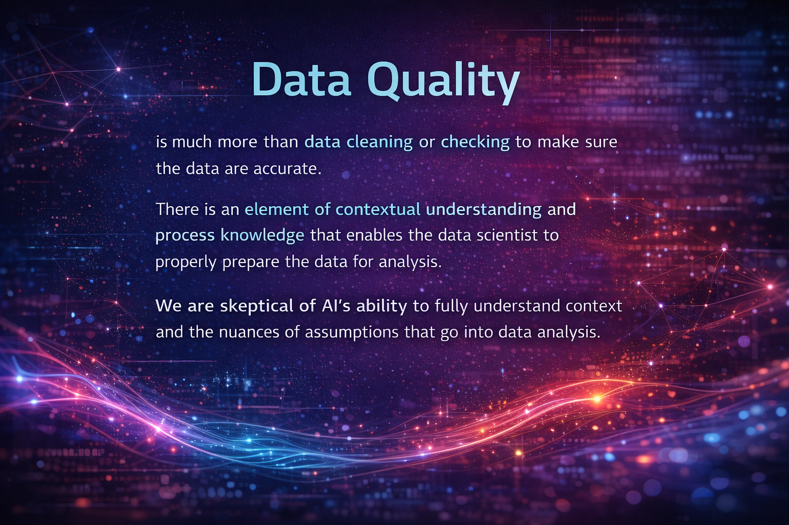

Discipline of Data Science
Data science is a relatively recent field compared to the disciplines that it consists of, namely statistics and computer science. New knowledge and disciplines often arise as combinations of existing fields and data science is no exception. Born into a world with increasingly large datasets, data science combined statistical methods with the tools of computer science to analyze large amounts of data.
As a discipline, data science gained popularity in industry and academia in the early 2000s and in part due to an influential paper published in the Harvard Business Review (1). This paper carried the provocative title of “Data Scientist: The Sexist Job of the Twenty-first Century”. After its publication, universities developed data science programs, governments poured funding into Big Data initiatives and organizations built data science teams to tackle problems. Powerful machine learning algorithms such as neural nets, random forests and ensemble methods provided ways to develop complex models that could be used on these large datasets.
As Hoerl noted in an earlier piece (2):
“There was a hiring rush for data scientists, not just in technology companies, but in virtually all sectors of the economy. For example, GE hired a new Chief Digital Officer from Oracle, Bill Ruh, in 2011. Ruh opened a new Software Center (later renamed “GE Digital”) in San Ramon, California in 2012, and by 2016 had hired 1,400 data scientists there.”
Current State of Play with Generative AI
While data analyses based on text data such as NLP (natural language processing) have been around for a while, a new type of approach has quickly become widespread with the rapid rise of generative AI methods. These models, known as LLMs (large language models), have entered the everyday vernacular as all organizations grapple with how to use these tools. With the debut of ChatGPT in 2023, these LLMs have become increasingly sophisticated, trained on a wider variety of data sources and optimized for a variety of different scenarios.
The accuracy of these models depends on the quality of the training data used. While LLMs are known to hallucinate or give inaccurate answers, they tend to perform better in situations where the training data is precise and exact, with less nuance than language often carries. As a result, LLMs can produce large amounts of computer code based on large amounts of training data based on accurate computer code. Some specialized LLMs (e.g. Claude Code) have been specifically designed to generate accurate code that can access, clean, combine, analyze and visualize data. While LLMs are not perfect in code generation, they can increase the efficiency of an experienced coder.
As a result of these LLMs, less knowledge is required to analyze and work with large datasets. A user can provide a specific prompt on the business question or research objective, upload the relevant data and have an LLM provide a relevant data analysis, complete with the underlying code used to generate that analysis.
The “New” Data Scientist
As LLMs improve in their ability to quickly generate vast amounts of accurate code, what does that mean for a discipline which has prided itself on its code wrangling skills? As Davenport and Patil noted “data scientists’ most basic, universal skill is the ability to write code” (1). Data science has seen coding as a viable career path.
When a skill becomes accessible to a wider variety of people and can be automated, how does one distinguish themselves in an organization? When coding can be done by AI tools, what happens to those who are known for their coding abilities? For a discipline to be recognized as a discipline, it must have some distinguishing characteristic that defines it as different from other disciplines. In addition, disciplines become more valuable and prominent as their contribution to society grows.
So, what are the skills that data scientists have that can’t be done well by AI? While AI capabilities are rapidly increasing, we do believe there are things that may be beyond the reach of AI for the time being.

We believe that the greatest factor limiting AI is data quality. There seems to be a growing consensus of the importance of data quality as noted in Davenport, Hoerl, and Redman (3), Davenport and Tiwari (4), and Redman (5) — as well as recent Real World Data Science pieces. As the adage goes, “garbage in, garbage out”. With poor, inaccurate data used in training, the resulting AI output will also be poor and inaccurate. A related fear is that, as AI models start to use AI generated content as a data source, a recursive loop happens that degrades the quality of any AI output (6).
Discussions of data quality are limited in books, university courses and training programs. When they do occur, they are restricted to the question of “are the data right?” and discussions of data cleaning. Data cleaning is often focused on eliminating outliers or invalid points. While there is often a reason to remove invalid points, those outliers can sometimes be the source of valuable insights.
However, data quality is much more than data cleaning or checking to make sure the data are accurate. There is an element of contextual understanding and process knowledge that enables the data scientist to properly prepare the data for analysis. We are skeptical of AI’s ability to fully understand context and the nuances of assumptions that go into data analysis. In an earlier piece, Jensen provided some examples of the limitations of AI when it comes to proper data cleaning (7). For any set of data, subject matter knowledge of how the data were collected and what they represent is crucial to a proper analysis.
This creates an opportunity for data scientists to become more valuable. By employing probing questions to better understand the context of the data, they will be in a better position to identify data quality issues and ways to improve the data quality, thus leading to better model output.
Conclusion
As coding becomes easier in an AI-enabled world - where anyone can code and analyze data - the skill set of a data scientist becomes less unique. Data scientists were once in high demand because they set themselves apart as coding wizards who could wrangle large datasets and extract insights. To remain successful and continue to deliver value, data scientists must now pivot their skillset. The real limiting factor in successful data science is data quality. A renewed focus on owning, improving and governing data quality will not only strengthen outcomes but also provide future job security and increase the value data scientists bring to organisations.
Note that this article is based on the following paper and contains some of the same ideas: Hoerl, Roger W. 2025. “The Future of Statistics in an AI Era.” Quality Engineering, published September 10, 2025.
- About the authors:
- Roger Hoerl is Brate-Peschel Professor of Statistics at Union College, after previously heading the Applied Statistics Laboratory at GE Global Research for many years. He has been elected to the International Statistical Institute and the International Academy for Quality, recieved numerous statistic awards, and authored five books in the areas of statistics and business improvements.
- Willis Jensen is data and analytics expert, currently Senior Manager of People Analytics and Business Intelligence at CHG Healthcare. He is an Adjunct Professor of Statistics at Brigham Young University, writes on Substack and is a member of the Real World Data Science editorial board.
Copyright and licence : © 2026 Roger Hoerl and Willis Jensen

 This article is licensed under a Creative Commons Attribution 4.0 (CC BY 4.0) International licence.
This article is licensed under a Creative Commons Attribution 4.0 (CC BY 4.0) International licence.
How to cite :
Hoerl, Roger. Jensen, Willis. 2026. “Why Data Quality Is the New Competitive Edge for Data Scientists.” Real World Data Science, 2026. URL